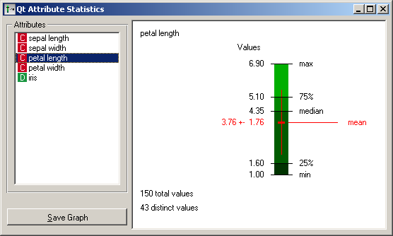
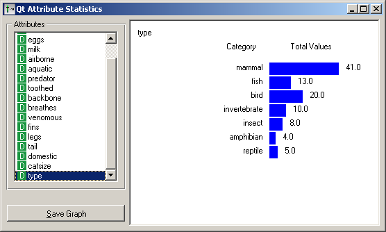
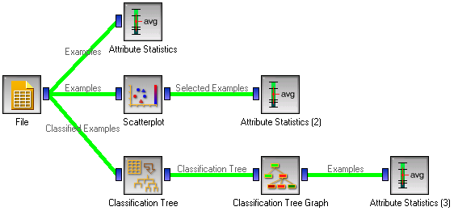

This is documentation for Orange 2.7. For the latest documentation, see Orange 3.
Attribute Statistics¶

Shows basic distribution of attribute values.
Signals¶
- Inputs:
- Examples (ExampleTable)
Input data set.
- Outputs:
- (None)
Description¶
Attribute Statistics shows distributions of attribute values. It is a good practice to check any new data with this widget, to quickly discover any anomalies, such as duplicated values (e.g. gray and grey), outliers, and similar.
For continuous attributes, the widget shows the minimal and maximal value. In case of Iris’ attribute “petal length” (figure on the left), these are 1.00 and 6.90. In between are the 25’th percentile, the median and the 75%, which are 1.60, 4.35 and 5.10, respectively. The mean and standard deviation are printed in red (3.76 and 1.76) and also represented with the vertical line. At the bottom left corner there is also information on the sample size (there are 150 examples in the Iris data set, without any missing values) and the number of distinct values that this attribute takes.
For discrete attributes, the bars represent the number of examples with each particular attribute value. The picture shows the number of different animal types in the Zoo data set: there are 41 mammals, 13 fish and so forth.
For both kinds of attributes, the graph can be saved by clicking the Save Graph button.
Examples¶
Attribute Statistics is most commonly used immediately after the File widget to observe statistical properties of the data set. It is also useful for finding the properties of a specific data set, for instance a group of examples manually defined in another widget, such as scatter plot or examples belonging to some cluster or a classification tree node, as shown in the schema below.
